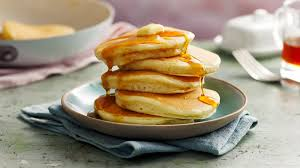

Pancakes

A delicious breakfast treat!
Pancakes are a type of flat, round cake made from a starch-based batter that may contain eggs, milk, and butter, and cooked on a hot surface such as a griddle or frying pan, often frying with oil or butter.
Ingredients
- 1 cup all-purpose flour
- 2 tablespoons sugar
- 1 tablespoon baking powder
- 1/2 teaspoon salt
- 1 cup milk
- 1 egg
- 2 tablespoons melted butter
- 1 teaspoon vanilla extract
Directions
- In a large bowl, whisk together the flour, sugar, baking powder, and salt.
- In another bowl, whisk together the milk, egg, melted butter, and vanilla extract.
- Pour the wet ingredients into the dry ingredients and stir until just combined. Do not overmix; the batter should be slightly lumpy.
- Heat a griddle or non-stick frying pan over medium heat and lightly grease with butter or oil.
- Pour 1/4 cup of batter onto the griddle for each pancake. Cook until bubbles form on the surface and the edges look set, about 2-3 minutes.
- Flip the pancakes and cook until golden brown on the other side, about 1-2 minutes more.
- Serve warm with your favorite toppings such as maple syrup, fresh fruit, or whipped cream.
Enjoy!
Back to index